Berck 2010

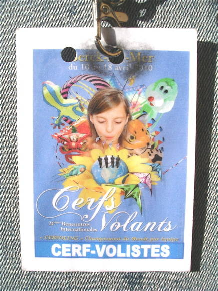
Berck, une semaine complète de cerf-volant, le pied ! Arrivée vendredi soir, je cherche mon enveloppe à l'Office du Tourisme. Déception, pas de tickets du soir cette année, le Festival serait-il en faillite ? Ou bien c'est moi qui ne les mérite plus ! Bah, je ferai sans... mais je me sentirai moins obligé de me forcer à voler, tôt le matin, ou quand les conditions sont difficiles... Un peu moins de cerfs-volants en l'air et un peu plus de farniente, c'est tout. Quant au badge, dire que Gérard m'attaque quand j'écris "cervoliste"... Côté positif, le CVCF aura un cabanon, c'est extra, la marche dans le sable pour ramener tout le bazar le soir au camion m'épuisait !

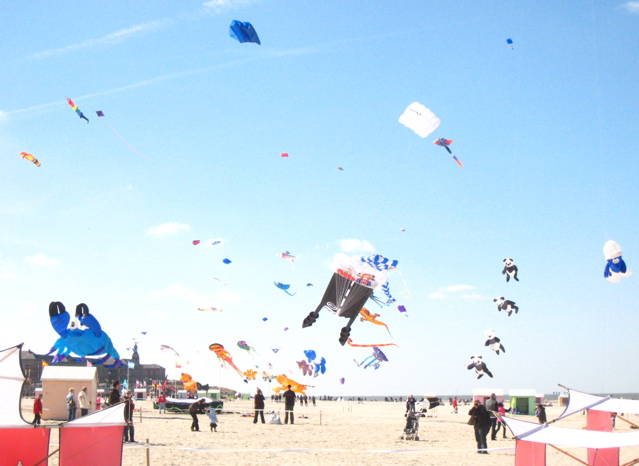
Samedi matin, vent assez fort et pas très chaud ! Les gros gonflables sont déjà en l'air quand j'arrive. Ils n'ont pas de crainte du vent, eux, s'ils tombent sur quelqu'un, il y a juste à dépêtrer...

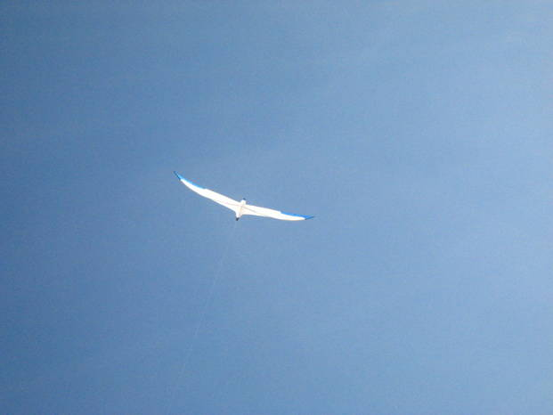
Je mets mon Albatros 1 en l'air, c'est celui qui supporte mieux le vent. Je l'ai un peu modifié, l'aile a une forme qui me satisfait mieux, et les cannes ne risquent plus de se désemboîter, elles sont inversées...

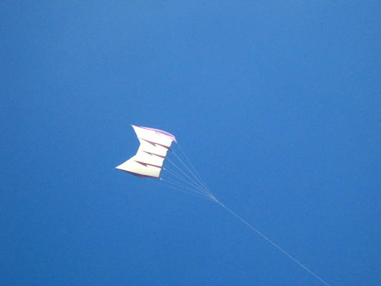
François Périaut met comme d'habitude le flow-form de Beauce en l'air, il lui faut des cerfs-volants d'homme...

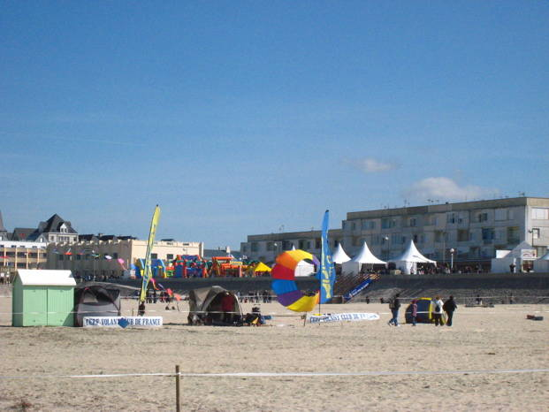
A côté de son cabanon (merci Gérard !), le CVCF a monté son camp, ses bannières, ses banderoles, ses tentes, ses parachutes, ses coccinelles, ses fanions et ses cerfs-volants !

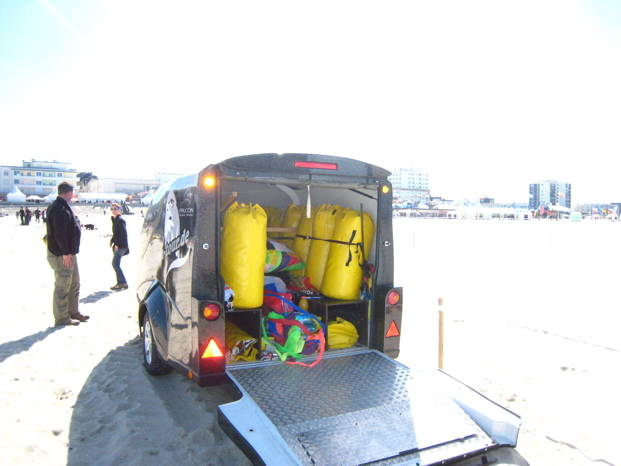
Des Allemands bien équipés, avec une remorque comme celle des Hurricane, et bien remplie de matériel !

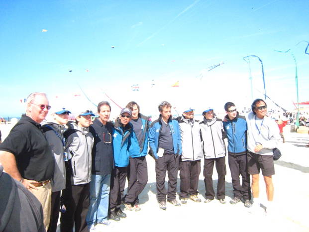
Gérard Clément pose avec quelques teams, comme l'équipe A de la France, en bleu (Iassou l'indestructible, Ramlal Tien, Richard Debré + un)... A gauche David Gomberg soutient l'équipe US !

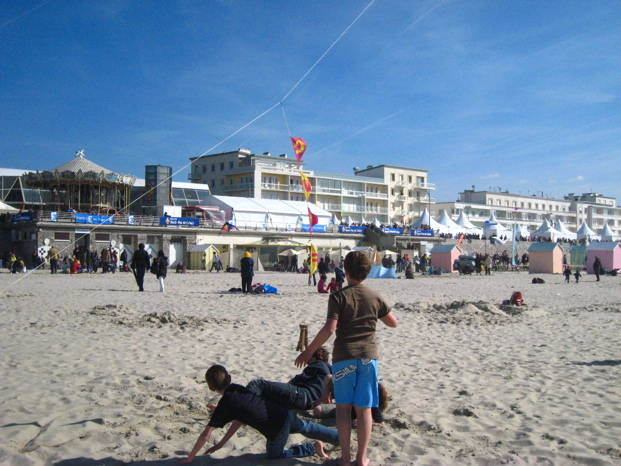
Sous l'Albatros, j'ai mis les fanions CVCF à ma façon avec un lest pour qu'ils soient plus lisibles... Le lest est un gant rempli de sable, et les gamins improvisent un jeu autour avec un gardien et des attaquants ! J'essaierai aussi une très longue bride basse pour que les fanions soient sur la partie verticale du fil. Ca marche bien, mais le rangement est plus complexe...

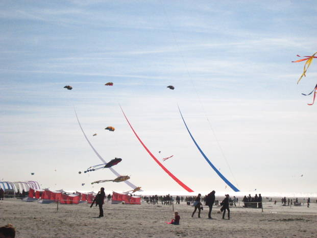
Les gros ne sont quand même pas très nombreux, mais ces immenses flammes meublent bien le ciel d'un élan ambitieux...

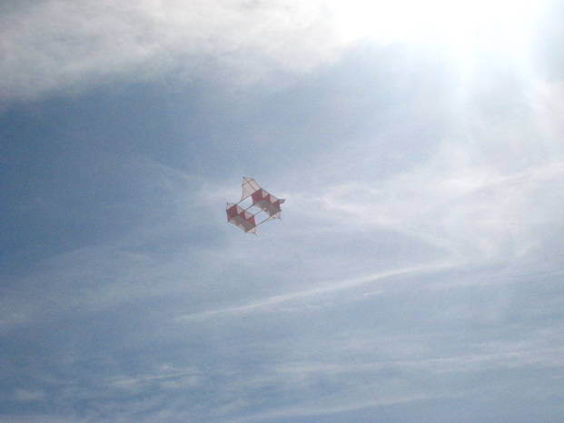
Daniel Guignet est venu avec ses Saconneys pour faire de l'ascension humaine. Il n'a pas peur du vent, mais celui-ci vient de terre et il est trop turbulent pour monter un train stable... Daniel fait joujou quand même en solo...

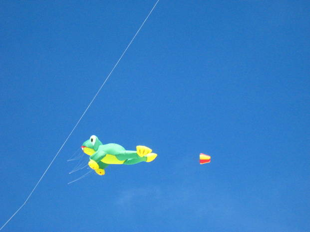
Patrick l'Higuinen a monté son Pyro blanc avec la grenouille qu'il a construite à l'atelier de Somain. On en verra d'ailleurs plusieurs !

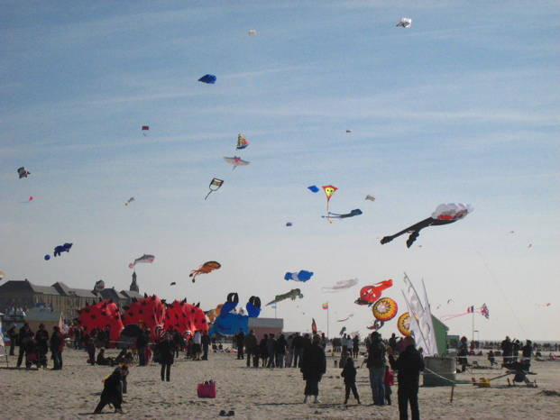
Il fait beau, le public est venu assez nombreux, et il y a aussi pas mal de cerfs-volants en l'air !

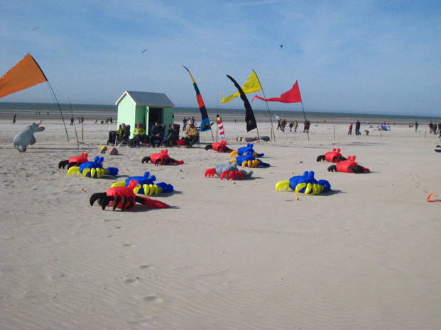
Nos voisins allemands de ColoursInMotion ont créé des crabes amusants : avec leurs petites pattes, ils marchent de côté sur les pointes comme des vrais quand le vent tourne !

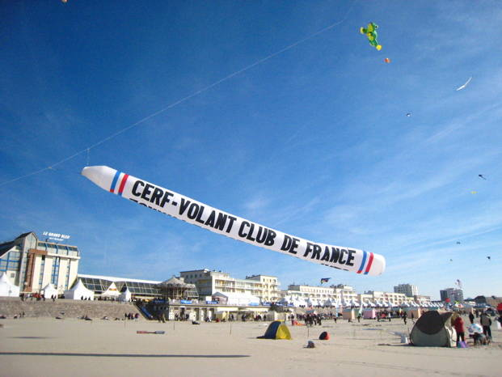
Nous avons récupéré et ainsi pu faire voler la splendide manche du CVCF, qui ne tourne pas, et traîne très peu malgré sa taille immense, merci à Guy...

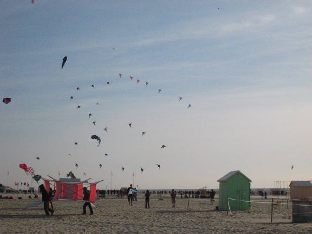
En fin de journée, les pilotables terminent toujours par un grand Mégateam, ici de 24 !

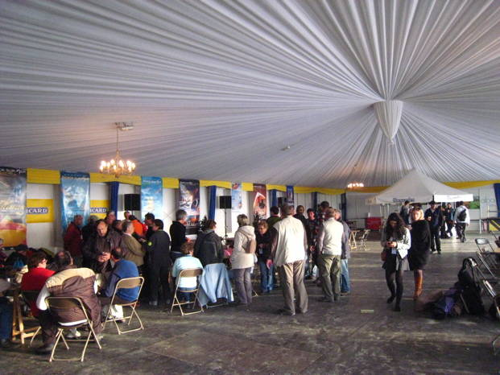
Au soir, utilisation du barnum VIP pour une pizza-partie en l'honneur du mariage de la fille de Mark et Niekol Vercauteren... On commence bien sûr par un petit apéritif en attendant les volontaires partis chercher la pile de pizzas...

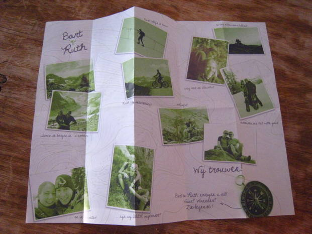
Bart et Ruth ont créé des faire-parts originaux en forme de cartes Michelin, pleins de photos-souvenirs...

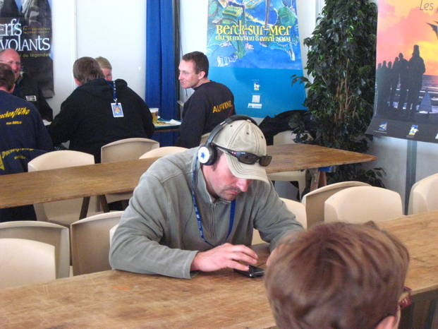
Derrière nous, un compétiteur répète son ballet, la musique sur les oreilles et les mains qui virevoltent...

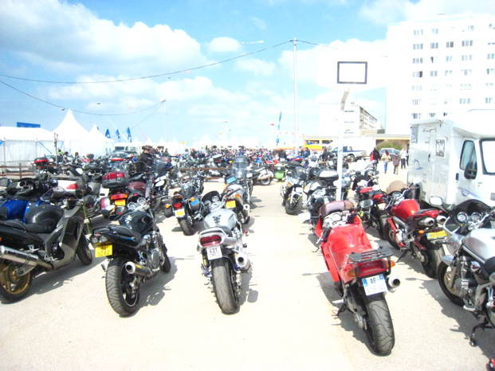
Dimanche, il fait beau, et une grosse concentre de motos a choisi Berck comme point de ralliement...

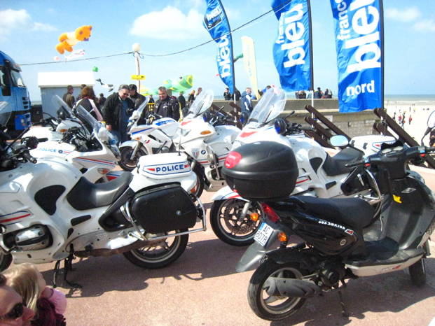
Il y en a même qui se garent n'importe où sur les trottoirs, les PV vont pleuvoir...

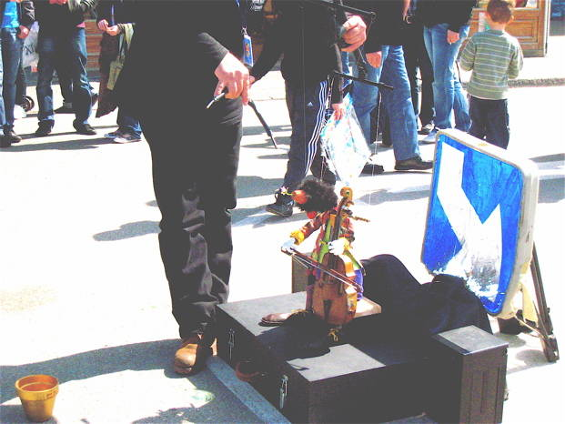
Devant le manège, un marionnettiste anime un violoncelliste avec autant d'âme qu'un vrai musicien !

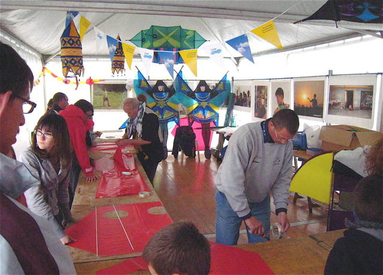
Sur la promenade, un atelier pour enfants animé par le Cerf-Volant Club Celtique (affilié au CVCF). Ils font construire (enfin, ils aident un peu...) de grands Sleds avec 2 trous qui volent très bien... Ils ont seulement dû fermer la tente à cause du vent !

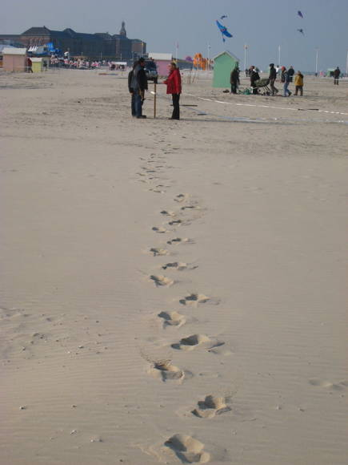
Sur les surfaces, le vent a vite fait d'effacer les empreintes, et on a l'impression de marcher dans un désert perdu...

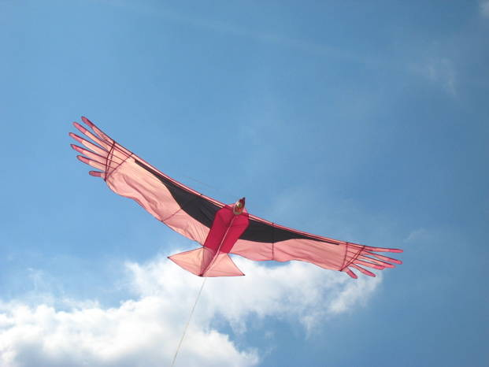
Dans le vent pas trop fort aujourd'hui (pour le moment, mais je devrais l'affaler plus tard...) mon Condor se débrouille bien, et je ferai un grand tour sur la plage avec lui !

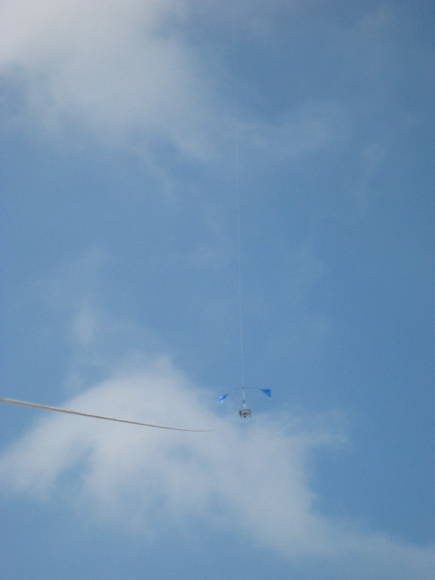
Tiens, ne serait-ce pas l'ami Christian Bécot qui nous rend visite ? Il y aura plusieurs aérophotographes, comme François Périaut, bien sûr, mais aussi Emmanuel Colonnier et Jean-Daniel Chantelauze qui a en outre amené du matériel de l'économat CVCF.

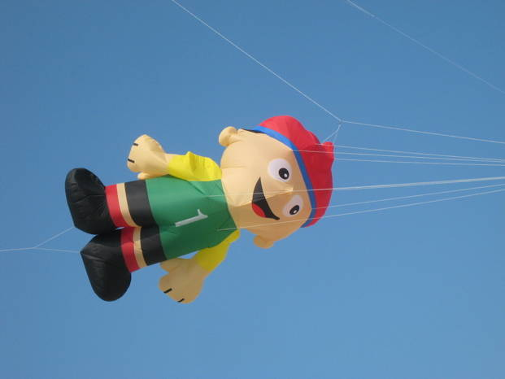
Chez les gros, cet amusant "goal", réellement imposant par sa taille !

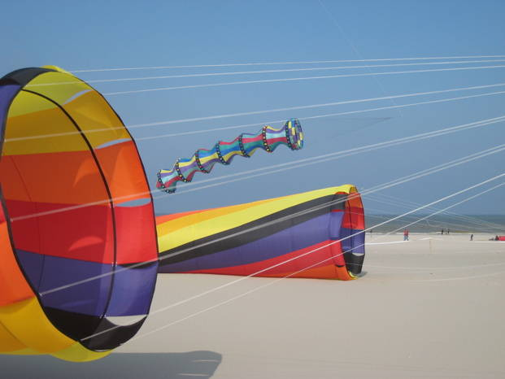
Et bien sûr, des manches à air énormes et de formes et couleurs variées !

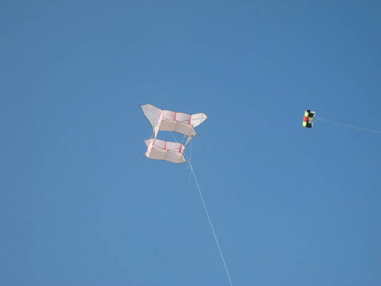
Daniel refait un vol solo pour tâter le vent, pendant que Loïk Lamalle monte un de ses cylindres amusants et stables !

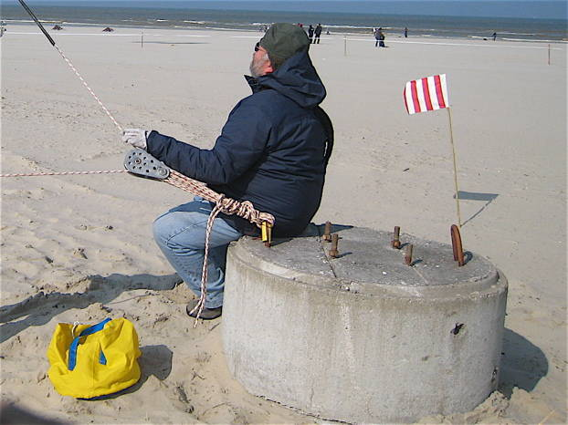
C'est Bruno Claes qui s'est collé à la ficelle, on ne peut pas laisser un tel engin sans surveillance. Notez la taille de la poulie !

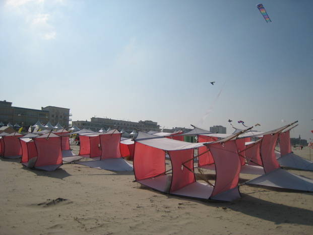
Finalement, tous les Saconney regagnent la terre ferme, leur position inversée les plaque au sol... sauf lors d'une forte rafale qui en décollera un qui roulera plus loin pour se coincer dans la clôture... avec quelques dégâts aux bambous...

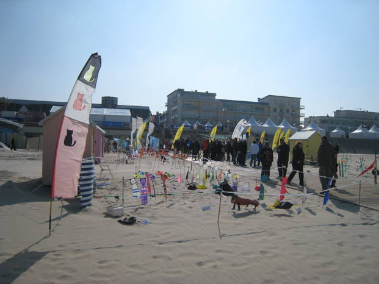
Jardins du V..t : Emmanuel Duba a encore augmenté son parc de chats. Il a organisé un concours pour faire deviner le nom d'une nouvelle création, une tresse à tête de chat...

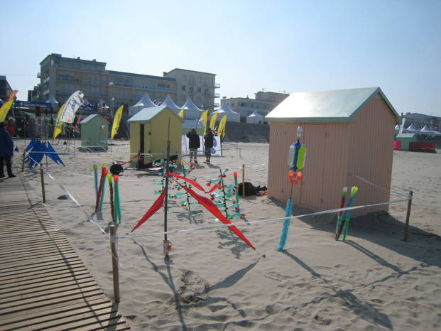
Fernando a créé de nouvelles fleurs. Son poisson est absent pour le moment !

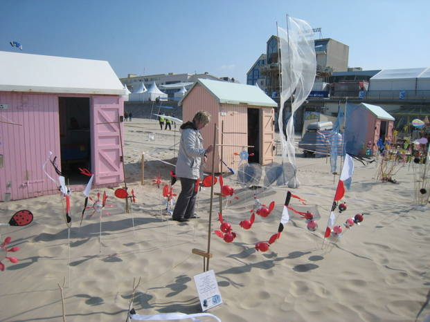
Patricia Ghesquière améliore doucement son jardin, spécialisé en récupération de matériels : cuillères en particulier qui constituent des pales de moulinet très bien profilées...

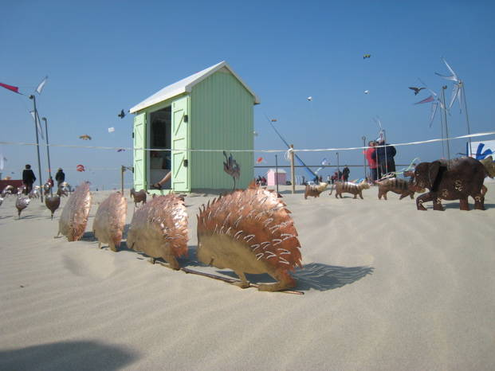
Pierre Dunoyer a monté un petit jardin avec des animaux en métal découpé confectionnés en Indonésie !

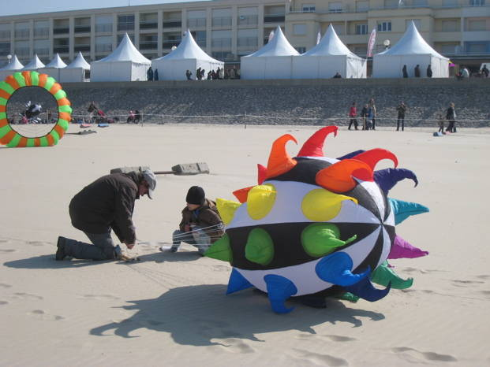
Patrick installe sa manche ColoursInMotion. On n'a pas revu cette année toutes celles, si extraordinaires et beaucoup plus grosses, qu'ils avaient amenées l'année dernière !...

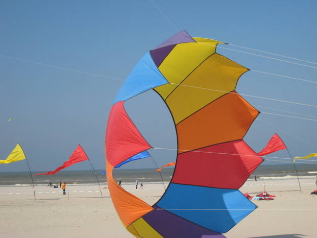
Patrick fait aussi un essai avec son grand bol, mais l'ancrage en béton est traîné sur le sol, alors il se contente de celui-ci, qu'il a créé lui-même !

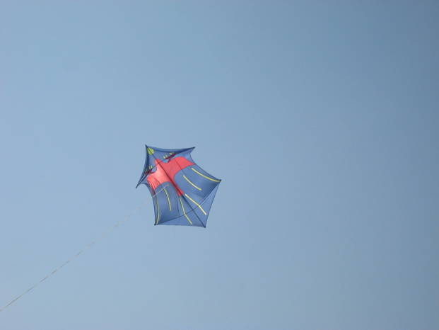
Le vent devenant trop fort (55 km/h en pointe... prolongée), je me contente de mon Rokkaku, il ne faut pas casser les oiseaux trop vite ! Il a les joues bien creuses, mais tient en l'air. La recette : pas de cambrage, c'est le vent qui s'en occupe, très cabré, et réglé au mm (1/2 cm d'écart et il chute régulièrement !).

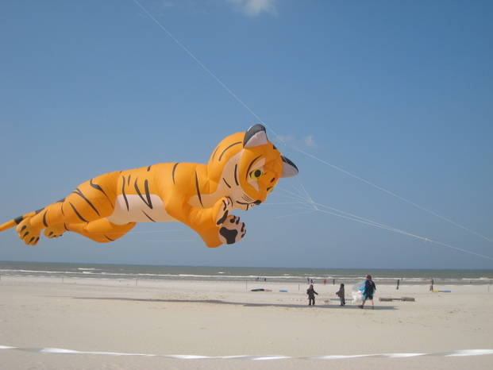
A l'autre bout des surfaces, un beau tigre se déploie avec jouissance au-dessus d'un désert bien lisse !

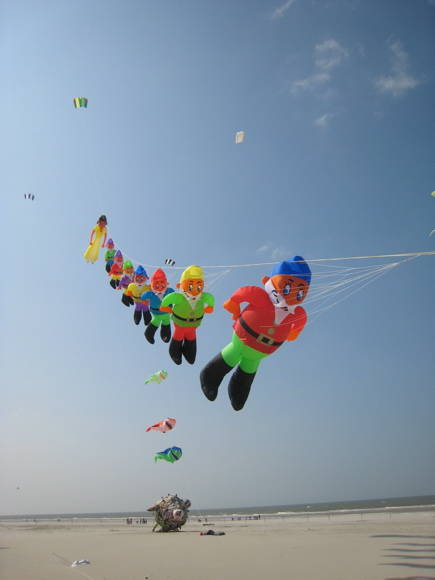
On peut admirer aussi un train de petits nains...

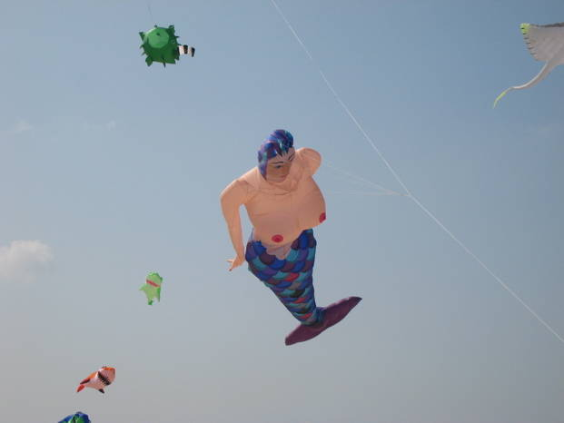
Dans le même coin, une sirène semblable à celles de Marco, avec de plus petits bras, mais des avantages plus... avantageux !

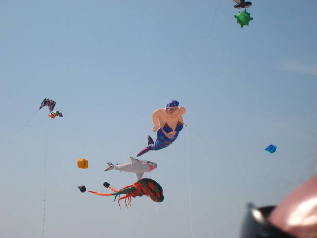
Une ligue a dû protester car on verra apparaître... passagèrement... une version plus respectable !

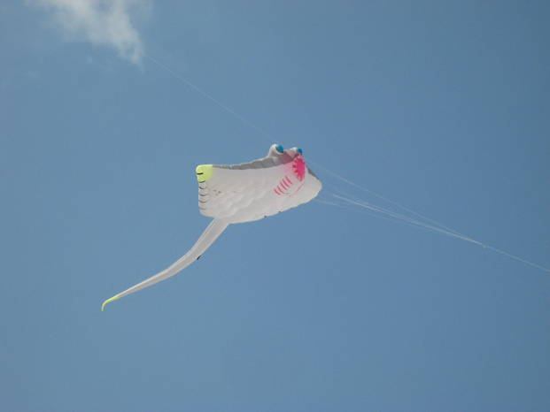
Les raies de Peter Lynn ont maintenant une nouvelle forme bien plus stable, avec le bout des ailes relevés !

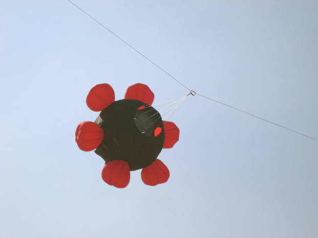
Les ColoursInMotion ont aussi fait tourner cette chose bizarre qui comprend de petites sphères gonflées autour d'une grosse. C'est la grosse qui gonfle les petites par des trous périphériques.

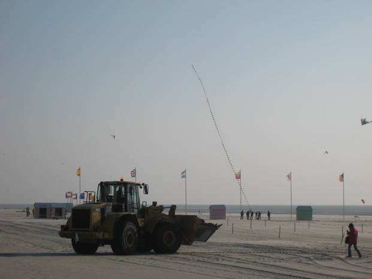
Au soir, je vois au loin Ludo qui a monté son dragon, mais il l'aura redescendu avant que je n'arrive plus près !

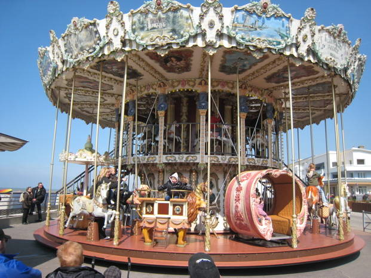
Bon, un petit tour sur la promenade, le manège est là comme tous les ans, avec sa musique d'époque genre orgue de barbarie !

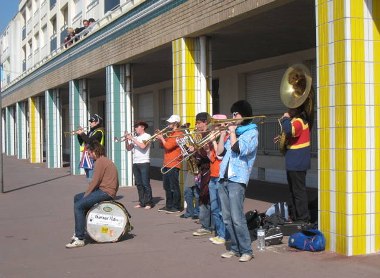
Un orchestre joue contre les arcades. Il est intitulé la Fanfare Piston, et effectivement, sous-titré Ecole Centrale de Lyon ! Sans doute des étudiants en vacances qui se font un peu de thunes !

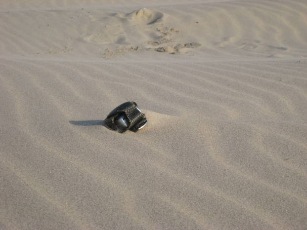
J'arrive au camion, et là, je m'aperçois que je n'ai plus mon téléphone ! Angoissant, d'autant que j'attends un coup de fil important ! Après quelques démarches à l'OT et aux postes de secours, je retourne près du cabanon, et là, à 20 m, je le vois ! Le vent a bien lissé le sable et le téléphone émerge comme un iceberg ! OUF !

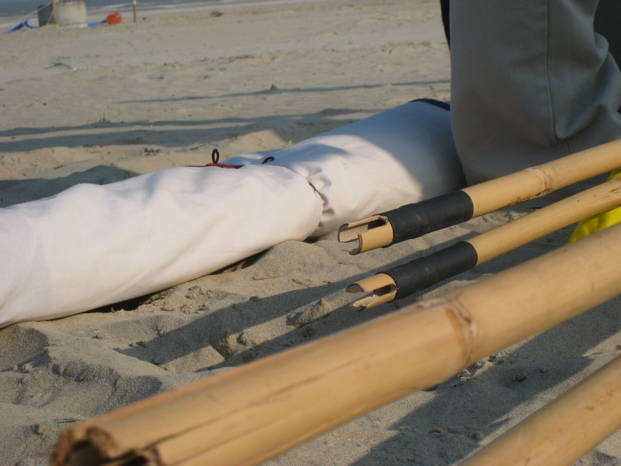
Ce matin, Daniel va réparer le Saconney qui a roulé dans une bourrasque et cassé quelques bambous. Avec des chutes conservées, des raccords, du Scotch pour régler le jeu et de la ficelle, il sera comme neuf...

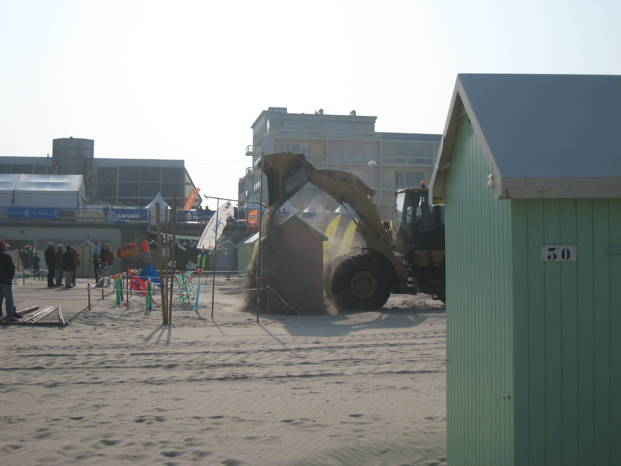
Le vent chasse le sable de sous les cabanons qui penchent de plus en plus ! Pour prévenir, un chargeur prend le sable sur la bosse qui s'est formée derrière, et le remet... sur le toit du cabanon d'où il se répartit comme il veut...

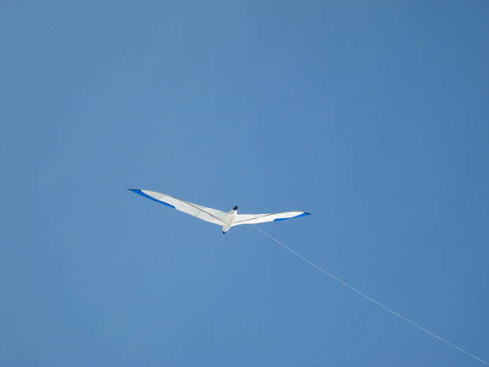
Le vent a baissé, plus de Rokkaku, je peux remettre mon Albatros1 ! L'Albatros 2 reste trop sensible pour cette force...

Dans les jardins, Bruno Tondellier est arrivé, et monte ses harpes et celles de Didier Ferment, ainsi que les flûtes !

La famille de Daniel Guignet a monté ce jardin léger et aérien, simple mais esthétique !

Niekol et Mark ont créé des objets à base de CDs assemblés, sous un filet qui les fait voler !

Le plus gros est ce poisson dont les écailles brillent de mille irisations...

Sur la promenade, un maquilleur fait juger à cette enfant si elle satisfaite de son allure !

Après le déjeuner, retour à mon Albatros que j'ai laissé dressé ! Le vent a fait un travail considérable dessous et derrière !

Le matin suivant, départ pour les lieux de pêche. Il y a de plus en plus de barnums sur la promenade, bien après le manège !

Loïk Lamalle est déjà là, en train de faire voler et d'équilibrer sa dernière création, pleine d'étagères, bien entendu !

Patrick a sorti son grand bol, ça tire d'enfer !

Sous leur flow-form, les "haches" sont de sortie. J'aime bien leur forme originale et leurs couleurs...

Le Mégateam de Révos s'entraîne, sous la haute main des FLICs ! Ils arrivent à une bonne homogénéité, mais évidemment avec des tâtonnements qui ralentissent la cadence, pour un si grand nombre...

Les Mouchague ont débarqué, avec leur nouveau 4x4, un Toyota aménagé en Allemagne ! Ils ont vendu leur appartement pour préparer une petite ballade de... 3 ans (et plus si affinités...) en Amérique du Sud et en Australie ! Evidemment, mieux vaut prévoir solide et capable de sortir de toutes les situations...

L'intérieur est coquettement aménagé... façon allemande ! Rehaussé avec une capucine et presque tout le confort. Pas gai, gai comme living-room, mais capable de résister aux séismes et aux explosions nucléaires !

En partant du camion, je vois qu'il y a plus matinal, comme ce grand requin fuselé...

Il n'a pas plu cette nuit encore, mais il a fait humide et le sable a formé une croûte superficielle... Les mouettes y laissent des traces durables qui résistent au vent !

Sur l'aire de démo, les Impossibles sont toujours Directeurs de terrain, et les compétitions vont bon train !

Les équipes au top ont étalé leur matériel, en gros 3 cerfs-volants (mais ça peut aller à 5 !) pour les différentes forces de vent !

Le fond du terrain est toujours délimité par une haie de bannières de Michel Boucard (j'en emprunterai une dimanche pour la parade en ville) ! Derrière, les monofils retrouvent leurs droits et ne s'en privent pas !

Du côté des gros, cette curieuse création mi-machine mi-crustacé où des conduites vont gonfler les boules arrières !

Sylvie Perry et Arnold sont arrivés aussi et Arnold tient ce superbe Pyrodelta...

Sylvie a créé cette année cette forme très travaillée, un peu instable quand même dans le fort vent, malgré ses multiples queues qui soulignent bien les turbulences !

Dimanche, il y aura une émission spéciale de télé sur FR3 ! Un hélico sans porte réalise déjà des plans en tournant autour de nous, s'arrêtant, repartant, repassant pendant 2 heures...

Comme le vent est solide, Loïk sort une de ses plus petites balises, mais la dote de queues monstrueuses !

Avec ce vent, même ce cerf-volant arachnéen tient l'air ! Dessus est écrit "and a o (ou op)"...

Un cellulaire dont la forme est peu lisible sur la photo, avec des voiles triangulaires genre Pellibox mais une structure différente ! Bien stable, mais avec une queue comme ça, c'est trop facile !

Toujours dans les gros, devant le tigre, un crabe comme ceux qui crapahutent à côté de notre village CVCF, mais celui-là vole et il est énormément plus grand !

Tiens, les Hurricane sont arrivés, avec leur remorque et leur cirque ! Ca n'est pas péjoratif, ils l'avaient construit pour le concours de Vierzon, et il y a même des jours où il vole !

Au milieu de la Promenade, une grande tente avec des créateurs de cerfs-volants légers, en général papier + bambou. Ici, les constructions de Thérèse Uguen, très ventilées !

Fabrice Baldan, qui fait beaucoup d'indoor et de Révo, s'est mis depuis relativement peu de temps à la création de ce type. Ses machines sont très architecturées, avec les baguettes devant pour mettre en valeur l'ossature qui les sous-tend...

Je ne connais pas l'auteur de ceux-ci, peut-être Martine, ou le monsieur qui ne sourit jamais et qu'on voit sur la première photo !

Encore une création de style particulier avec des matériaux assez "nature", sorte de papier brut froissé et pommelé, ficelle duveteuse et bel équilibre...

Et revoilà des cerfs-volants de Sylvie !

Vendredi soir, dîner sous la tente, le Kursaal est en réfection ! Je ne croyais pas que le barnum serait assez grand pour tout le monde ! Je quitterai prématurément, ne supportant pas les vociférations et disputes d'un garçon pourtant très gentil... dans son état normal ! Après mon départ dont j'espérais qu'il lui démontrerait qu'il était emm...t, il en est même venu aux mains...

Monsieur le Maire fera son discours habituel, dont j'ai retenu que le Festival serait reconduit l'an prochain, et peut-être même augmenté ! Une cérémonie aussi, un peu longuette (tout le monde attend le top-buffet...), pour remettre aux Koweiti une médaille, chacun sait quels brillants cervolistes ce sont... ... ...

Pour remercier, ils ont même remis à Gérard une magnifique oeuvre d'art représentant "leur" oeuvre !

Samedi matin, j'ouvre un oeil, mon voisin de camping-car part sur son mini-Solex pour acheter sa baguette quotidienne...

Je vous ai dit que nous avions obtenu un cabanon. Il est de plus en plus plein à mesure que la semaine avance et que le week-end arrive ! Là, c'est le côté droit, mais à gauche, c'est pareil !

Samedi midi, le CVCF fait un petit pot, pas que pour ses membres, bien sûr ! Samedi, parce que dimanche, plein de cervolistes seront partis pour éviter les embouteillages !

Gérard Rosenblatt arrive avec son nouveau chienchien, propre et pas encombrant ! Plastique cousu, bien sûr, comme d'habitude...

Gérard en a créé d'autres, plus féroces, en tout cas plus impressionnants ! Mais ils sont attachés, heureusement !

Son Jardin comprend aussi de ses créations habituelles, comme l'igloo auto-gonflant, divers poissons ou les magnifiques méduses !

Question Récup (c'est dans le thème de l'année), Niekol a créé cet harmonieux multi-mobile à base de packs de jus d'orange découpés...

Le studio de TV n'est pas encore bien installé, c'était juste pour vous montrer ces beaux ensembles de bannières coordonnées !

Les Saconney restant au sol, Mark a profité de leur espace réservé et de leur gueuse à toute épreuve pour sortir son immense bol !

Le vent a beaucoup faibli, et je sors Megoel de 8 m qui n'aime pas la tempête ! Ca fait un moment qu'il n'a pas volé, mais il se tient toujours bien, à part quelques soucis avec les whiskers de poitrine, un détail pour un CV si stable et qui attire des compliments spontanés des spectateurs...

Bon, elle vole aussi, en compagnie d'un Roller !

Ce Pyro est bien construit, mais je ne connais pas le créateur, et je ne sais pas quel est le sens des figures, si elles en ont un !

Près de nous, une petite et une moyenne raies s'ébattent joyeusement...

Avec ce beau temps, presque chaud, et un vent de mer idéal, il finit par y avoir un public énorme, et je n'ai jamais vu ici autant de cerfs-volants en l'air !

Parmi d'autres, cette caisse, triangulaire de base, mais un peu plus complexe, qui vole de façon très stable !

Les Saconney ne volent pas ? Daniel monte son Arcturus immense, avec une queue démesurée ! Elle ne sert à rien pour la stabilité, d'ailleurs !

On monte quand même un petit Saconney pour ne pas être venu pour rien, et le fiston fait voler une de ses créations (je suppose), bien adaptée à ce vent !

Au soir, on se retrouve avant le vol de nuit pour une nouvelle Pizza-Partie ! Nous ne sommes pas les seuls, les Pirates sont arrivés et mangent de la pizza aussi, et certains membres de l'organisation feront de même !

Le vol de nuit commence avant l'heure, il vaut mieux être en l'air si le vent tombe... Alors, un peu à l'écart, ces 5 cerfs-volants sont restés en l'air...

Les "Haches" ont préféré aussi ne pas se poser ! Je pense d'ailleurs que certains jours, des gonflables sont restés en vol toute la nuit !

Ca y est, le spectacle est commencé, les projecteurs crachent leurs watts ! Les Pyrodeltas blancs des Impossibles sont de la fête... Hélas, au milieu du spectacle, le groupe électrogène rend l'âme et le show se terminera dans le noir ! Pas sérieux les éclairagistes, un petit groupe de secours partiel aurait été bienvenu !

Un défaut du spectacle, c'est que seuls les acteurs pressentis ont le droit d'y voler ! Les autres peuvent voler en dehors s'ils veulent, en grappillant quelques photons par-ci-par-là, ou en les produisant eux-mêmes...

Le cerf-volant de "vous savez bien" est là, ainsi que le jaune ! Dur de les photographier à l'instant précis où le faisceau d'un projecteur passe dessus sans prévenir !

A la fin du spectacle, orienté Ecologie, une Terre sort... de terre, portée par 4 hommes en blanc (des non-pollueurs ?), et, bon, il faudra la respecter, hein !

Heureusement, le feu d'artifice marchera quand même et sauvera la situation... Un très beau feu par phases alternant avec le texte de la voix Off de Gérard... Et tout à fait à gauche, l'aile de Mégoel dont c'était le baptême du feu, mais qui s'est très bien vu, m'a dit Gérard...

On y verra des fusées très diverses dans les couleurs, les trajectoires, traçantes ou non, et plus ou moins bruyantes !

Le bouquet final sera particulièrement explosif, dans un crescendo qu'on s'attend toujours à voir finir, mais qui augmente encore jusqu'au silence brutal qui le conclut !

Les cerfs-volants du spectacle sont posés, je me pose aussi pour retrouver les autres sous la tente VIP et en discuter jusqu'à minuit ! Le pauvre tigre reste tout seul, tristement dressé dans le projecteur des drapeaux des nations participantes...

Les acteurs se débarrassent de leur combinaison blanche, mais à son âge, Dédé a besoin d'une habilleuse, et pas n'importe qui !

Dimanche matin, tout petit vent de terre qui tourne vers 11 h à une brise de mer légère, je fais voler mon Spiralier, presque tout seul, surtout à 200 m... 12 h 30, c'est l'heure du déjeuner, eh bien pas du tout, c'est la parade en ville. Je vais vite voler une bannière sur le terrain, et je ne suis pas le seul !

Et c'est parti à travers les rues, il faut bien que les commerçants voient qu'on est là, ils sont trop occupés pour aller à la plage ! Plusieurs orchestres, devant, derrière et une batterie au milieu, l'ambiance est chaude !

A un moment, on s'arrête, on fait demi-tour, on rentre dans ceux qui suivaient, mais on finit par s'y reconnaître ! Les majorettes se retrouvent sans leur orchestre qui a déjà tourné les talons, mais ça ne durera pas !

Claude a revêtu sa tenue de défilé et approvisionné son pistolet à eau ! La dame chinoise fait une petite pause en attendant que l'axe de marche se décide...

Retour enfin au réfectoire ! Cette charmante demoiselle s'est déguisée en Schtroumpfette... verte !

Les serveuses sont bien aguichantes aujourd'hui, dommage que ce soit factice, mais le sourire reste authentique !

Dimanche après-midi, dernier jour, grand beau temps, vent de mer Force 2, que demander de mieux. Côté droit, il y a plein de monde...

Côté gauche, il y en a encore plus !

Avec ce vent, on peut enfin faire un combat de Rokkakus ! Il y a du monde, l'organisation a même prêté des cerfs-volants... Mais il faut être à l'heure, le combat est télévisé en direct sur FR3 !

Evidemment, le combat se termine comme à l'habitude par un enchevêtrement sans nom ! Heureusement, j'ai un couteau, toutes les ficelles n'ont pas de valeur !

Les démonstrations se succéderont jusqu'à la fermeture, ici, le mégateam des Révoïstes qui a bien progressé au fil des jours !

Plus loin, à droite, les enfants ne s'en préoccupent pas et jouent sous les grands Fugus rouges !

Sur le plateau, l'émission de télé se termine avec Gérard et Martine, et la charmante commentatrice, sous le grand soleil... et le feu des gros projecteurs...

Les Impossible font joujou, pour étonner le public, ils ont abouté leurs trains de Flexis, j'en compte vingt-quatre !

Un dernier coup d'oeil vers les gros, mais les étrangers qui vont loin ont déjà quitté la place, d'autant qu'il faut 2 h pour sortir de Berck si on traîne trop au départ !

Comme beaucoup d'autres, je passerai la nuit paisiblement sur place et partirai sans embouteillages demain matin ! Certains étrangers devront même attendre que la circulation aérienne se rétablisse après l'éruption du volcan islandais ! Je ne m'arrête pas en route, juste le temps d'une photo d'une église du Nord...

C'est pour la comparer avec l'église de La Feuillie, en pays de Bray, qui joue au contraire dans la finesse et l'élancement ! Mais je ne m'arrête toujours pas !

En fait, je suis pressé de rentrer pour voir mon petit-fils, Thomas, qui est né mardi et que je n'ai pas vu encore ! J'ai juste fait quand même un pot du soir et un petit du midi pour lui souhaiter la bienvenue...
Berck 2010 : Comme à Châtelaillon, des vents forts en continu, mais par contre, pas une goutte d'eau de la semaine ! Les 2 derniers jours ont été moins ventés et plus chauds et, du coup, les cerfs-volants se sont incroyablement multipliés ! Le Championnat du Monde de pilotables consomme pas mal de ressources, mais les terrains comme les barnums s'agrandissent d'année en année ! Une très bonne semaine, qui s'est en plus terminée avec les plus beaux jours !